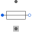
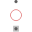

InductionMachinesLoss models for induction machines |
|
Package Contents
|
Model considering voltage drop of carbon brushes |
|
|  |
Model of stray load losses dependent on current and speed |
|  |
Model of permanent magnet losses dependent on current and speed |
|
Model of core losses |
Information
This information is part of the Modelica Standard Library maintained by the Modelica Association.
This package contains loss models used for induction machine models.